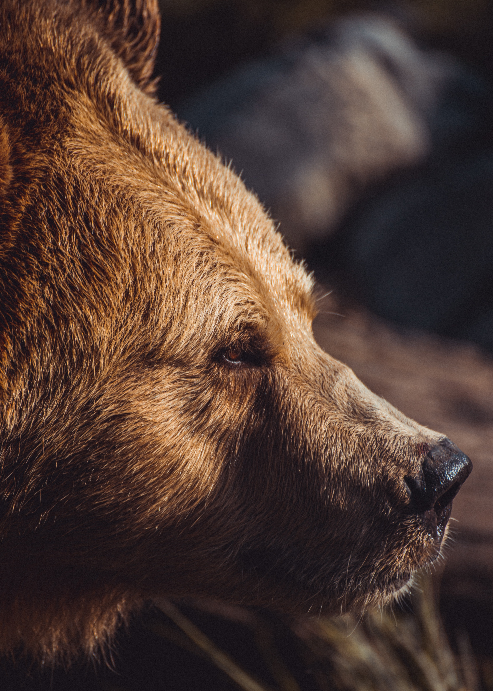

The presence of bears is a strong and vivid occurrence in There There . Bears can mean a lot of different things symbolically to different tribes. For example, bears can mean strength, resilience, protection, and more. In the case of There There, we see that this symbol is found in two strong instances during Opal Bear Shield’s Not only does her name “Bear Shield” hold a strong presence and closely resemble who she is as a character, but she also has a teddy bear named Two Shoes who speaks to her like an imaginary friend.
This page compiled by Arica Burns, Sophie Nicholson, and Athena Pajer.